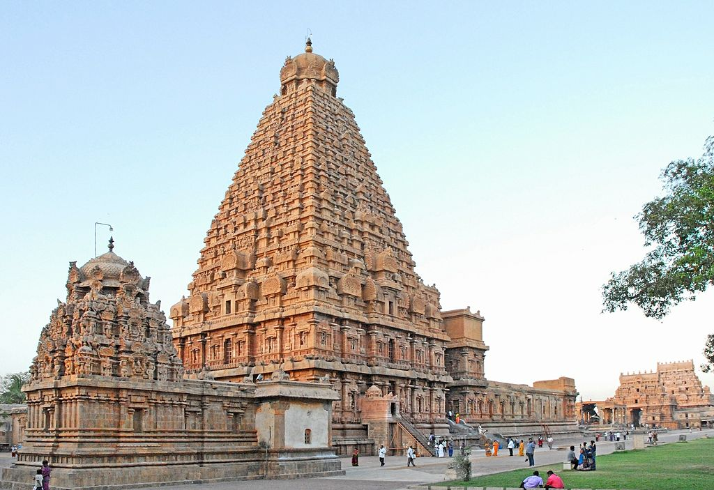

Tamil Nadu Its capital and largest city is Chennai. The state is the home of the Tamil people, whose Tamil language—one of the longest surviving classical languages in the world—is widely spoken in the state and serves as its official language.
Archaeological evidence points to this area being one of the longest continuous habitations in the Indian peninsula.[11] In Attirampakkam near Chennai, archaeologists from the Sharma Centre for Heritage Education excavated ancient stone tools which suggest that a humanlike population existed in the Tamil Nadu region somewhere around 1,000 years before homo sapiens arrived from Africa. The most prominent of these works is the Tirukku?a? written by Valluvar, a collection of couplets covering all aspects of life from ethics to love. This text is still treated with great reverence by those in the present-day.Around the 7th century CE, the Kalabhras were overthrown by the Pandyas and Cholas, who continued to patronise Buddhists and Jains before the Saiva and Vaishnava revivalism in the Bhakti movement.
